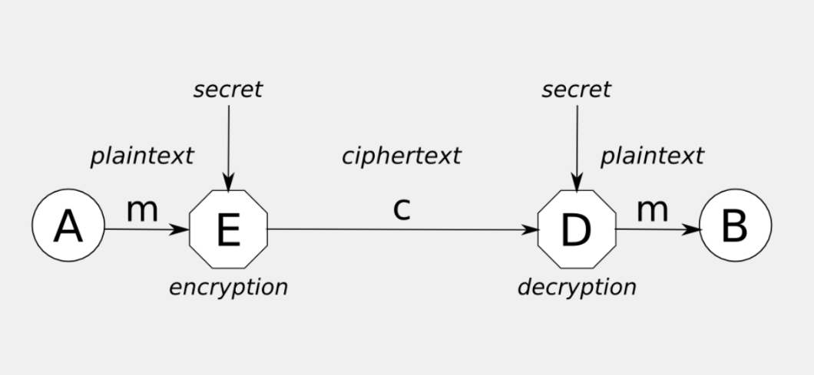

Trasformazione: Operazione che trasforma un messaggio in un altro messaggio
Arbitro: Terzo ente che verifica che le trasformazioni siano corrette
Se Sorgente o Destinazioni sono fidate, potrebbe non servire l'arbitro


Crittografia: Scienza che studia le trasformazioni per la sicurezza Crittoanalisi: Scienza che studia come rompere le trasformazioni per la sicurezza

Le trasformazioni per chi è autorizzato sono calcoli facili da eseguire, per chi non è autorizzato diventano calcoli computazionalmente molto complicati.
Preservare il dato da alterazioni accidentali o intenzionali.
Il caso più semplice per proteggere da errori casuali potrebbe essere un checksum o un CRC (Cyclic Redundancy Check, hash semplice), ma non sono sufficienti per proteggere da attacchi intenzionali.
Per proteggere da errori intenzionali si utilizzando funzioni hash crittografiche. Producono un riassunto univoco.
Dato un messaggio di lunghezza m producono un hash di lunghezza n (dove n è molto più piccolo di m). Per rendere difficile il compito dell'attaccante l'hash si deve comportare da oracolo casuale, utilizzare simboli equiprobabili.

Il messaggio m viene inviato da S a D su un canale, il mittente calcola l'hash e lo trasmette su un canale sicuro, il destinatario calcola l'hash e lo confronta con quello ricevuto. Se sono uguali il messaggio è integro. Un attaccante proverà a mandare un messaggio alterato che produca lo stesso hash, con funzioni hash crittografichè è pressochè impossibile.
Per proteggere la riservatezza delle informazioni è necessarrio ricorrere a metodi di cifratura. La sorgente concorda con la destinazione un metodo di rappresentazione.
I calcoli da svolgere devono essere facili per sorgente e destinazione, ma computazionalmente impossibili per un attaccante.

Ally cifra il messaggio con un segeto producendo il ciphertext e lo invia a Bob. Bob decifra il messaggio con lo stesso segreto concordato e ottiene il messaggio originale.
Per proteggere contemporaneamente riservatezza e integrità si procede:
Per certificare che l'autore di un messaggio sia autenticato si utilizzano le firme digitali. Anche in questo caso i calcoli per dimostrare la propria identità devono essere semplici mentre computazionalmente impossibli quelli per creare un falso autentico.

La sorgente trasmette il messaggio m su un canale, genera l'hash del messaggio e lo firma, lo cifra e lo trasmette al destinatario mediante un canale sicuro, Il destinatario riconosce la firma, decifra il messaggio e verifica che l'hash sia corretto. Se sono uguali il messaggio è integro e l'autore è autenticato.
L'identificazione permette di identificare un utente a real time (non come l'autenticazione). Si basa su tre concetti principali:
Un protocollo di identificazione prevede una fase di registrazione in cui identificando e verificatore concordano un segreto. Poi si procede in 3 fasi:
Abbiamo parlato di calcoli difficili per un utente malevolo. Definiamo questo concetto.
Una funzione f è detta unidirezionale o one-way function se:
esempio: elenco telefonico trovare il numero di telefono di una persona ha complessità O(n), mentre trovare il nome di una persona a partire dal numero di telefono ha complessità O(n^2)
Non esistono funzioni unidirezionali perfette ma pseudo unidirezionali o trapdoor one-way.
I problemi vengono classificati in:
Definiamo quindi:
Sulla base di queste grandezze si studia l'andamento asintotico del tempo di esecuzione al cresere della dimensione di n, lo si definisce Ordine di grandezza del tempo di esecuzione: $T(n) = O(g(n))$, dove g(n) è una funzione tale che $0<f(n)<c\times g(n)$ per ogni $n>n_0$, dove c è una costante positiva e $n_0$ è un numero naturale.
Ogni algoritmo che consente di difendere una proprietà critica deve avere tempo polinomiale, metre gli algoritmi che consentono di rompere una proprietà critica devono avere tempo esponenziale.
Utilizzeremo quindi funzioni pseudo-unidirezionali la cui risoluzione è polinomiale e la cui inversione è esponenziale o semi-esponenziale.

La cosa migliore è che la responsabilità del segreto sia dell'utente, utilizzando un algoritmo pubblico ma che funzioni con un parametri privato noto solo all'utente.
Esistono due tipi di algoritmi:

Studia come decifrare testi cifrati senza conoscere la chiave. Escludendo i calcoli, le chiavi possono essere indovinate, intercettate o dedotte. Questo ovviamente deve essere impossibile.
I segreti possono essere indovinati facendo una ricerca esauriente (brute force), utilizzando dizionari composti con le parole più probabilmente utilizzate, oppure utilizzando le chiavi più comuni (es. 123456, password, ecc.).
Siamo comunque esposti a diversi tipi di attacco:
Si può strutturare un file system cifrato in tre livelli di gerarchia dei segreti:
Serve una forma di recovery.
Alla stringa generata da un RNG sono richieste 2 proprietà:
per verificare la casualità sono stati definiti alcuni test statistici:
L'imprevidibiltà viene valutata con next-bit test: data $L$ bit non deve eseistere nessun algoritmo polinomiale che permetta di predire $L+1$ con probabilità maggiore di $1/2$.
Il TRNG si basa su fenomeni fisici. I generatori hardware digitalizzano un segnale analogico fornito da una sorgente. A volte viene fatto un post processing per rendere equiprobabili 1 e 0 (skewing).
Il PRNG si basa su algoritmi deterministici che producono sequenze di bit casuali. La sequenza è determinata da un seme iniziale, che deve essere scelto in modo casuale. La sequenza è periodica e il periodo è limitato dalla lunghezza del seme.
Oggi è conveniente l'uso di generatori algoritmici, quindi sono stati trovati nuovi algoritmi per conseguire casualità e imprevedibilità. I generatori algoritmici sono più veloci e più facili da implementare, ma meno sicuri.
L'output di una funzione di Hash è detta riassunto o impronta (digest o fingerprint).
Tuttavita riducendo una stringa di $m$ bit a una di $n$ bit, con $n<m$, è possibile che due stringhe diverse producano lo stesso hash. Questo fenomeno è detto collisione.
Si distinguono quindi funzioni di hash semplici e crittografiche a seconda che l'individuazione di collisioni sia facile o difficile.
Per proteggere l'integrità è necessario che l'individuazione di collisioni sia difficile. Per proteggere la riservatezza deve essere difficile il colcolo dell'inversa.
Altra proprietà che devono avere le funzioni di Hash è la non invesibilità.
Tutti gli algoritmi di has si basano sul principio della compressione iterata, ovvero si applica una funzione di compressione a blocchi di lunghezza fissa, che produce un hash di lunghezza fissa. La funzione di compressione è iterata più volte fino a ottenere l'hash finale.
Un attacco a cui sono vulnerabili alcune funzioni di hash è il length extension attack.
Un protocollo di identificazione ha lo sscopo di identificare un'entità A verso un'entità B. Deve però rispettare alcuni requisiti:
Un protocollo di identificazione si svolge in 3 fasi:
L'identificazione può essere passiva o attiva
Un meccanismo di identificazione passiva si basa sull'inserimento di una password che quindi sarà inviata all'ente verificatore tramite un messaggio del tipo $A||PSW$
I possibili attacchi sono:
Consiste nel cambiare continuamente la prova d'identità. Può essere fatta in vari modi:
Tutte e tre devono rispettare che il calcolo della proa sia facile per chi conosce il segreto e difficile per chi non lo conosce o dispone solo delle prove precedenti.
Funziona o tramite funzioni unidirezionali o tramite un cifrario con chiavi di sessione.
Il primo metodo prevede che, in fase di registrazione, A scelga un numero casuale $X_A$ e immpieghi una funzione unidirezionale $F$ per calcolare $F(X_A), F^1(X_A), ... , F^n(X_A)$. Su B sarà memorizzato $F^n(X_A)$ e A potrà utilizzare $F^i(X_A)$ a partire da $i=n-1$ fino a $i=0$ per identificarsi. B memorizza $F^i(X_A)$ e lo conoscendo $F$ verifica che $F(F^i(X_A))$ sia $F^n(X_A)$, poi sostituisce l'ultimo.
Il secondo metodo prevede che i corrispondenti, all'inizio di ogni sessione modifichino il segreto con il quale viene cifrata la medesima password. La password viene cifrata con una chiave di sessione, che viene generata in modo casuale.
Si tratta di dare testimonianza della propria capacità di risolvere un problema ritenuto difficile.